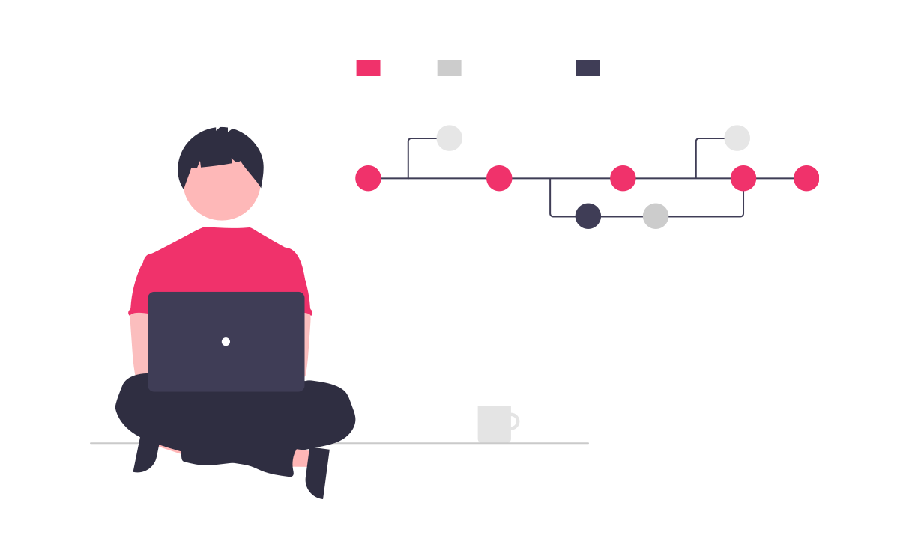

Factores de Calidad Internos
No son observables durante la ejecución del sistema.
Son propiedades que se persiben durante el desarrollo, la verificación o mantenimiento, mientras que se implementa código, se modifica, se usa o se mueve a otra plataforma. Afectan directamente al usuario cuando una ineficiencia en la funcionalidad degrada el perfomance o cuando un cambio en los requerimientos demanda un tiempo o costo excesivo.

Factores de Calidad Externos
Hay diversos factores de calidad externos y entre los más conocidos están:
- 1. Integridad.
- 2. Confiabilidad.
- 3. Disponibilidad.
Integridad
Se ocupa de prevenir la pérdida de información y preservar cierto nivel de correctitud en los datos.
Los datos deben protegerse de errores accidentales e intencionales así como los taques deliberados pueden tenr las mismas consecuencias que los accidentes.
La intergridad requiere controlar también los datos recibidos de otros sistemas. El sistema puede preservar la integridad sin comprometer otros factores como por ejemplo la usabilidad.
Confiabilidad
Se refiere a la capacidad del software para ejecutarse sin fallar por un período de tiempo. Los problemas de confiabilidad se producen cuando se ingresan datos no válidos, el código tiene errores, un componente no está disponible cuando se necesita o el hardware falla.
La confiabilidad esta entonces intimamente ligada a la robustez y disponibilidad. Los sistemas con grandes requerimientos de confiabilidad deben ser verficados rigurosamente. La manera de medir la confiabilidad puede ser:
- 1. Porcentaje de operaciones que se ejecutan correctamente en un período.
- 2. Promedio de tiempo entre fallas.
Disponibilidad
Se refiere al tiempo durante el cual el sistema estará en servicio ofreciendo toda su funcionalidad. El sistema está en servicio desde que empieza a funcionar hasta que termina de ejecutarse por una falla o por una parada de manteniento planificada o no.
Las tareas de mantenimiento pueden ser borrar archivos temporales, transferir datos o recibirlos, desfragmentar el disco, etc. Observando que la palabra mantenimiento es usada para referirse a una tarea y a una etapa en el proceso de desarrollo. Hay funcionalidades que son más críticas que otras en el sentido de que son esenciales para que el usuario realice una tarea.